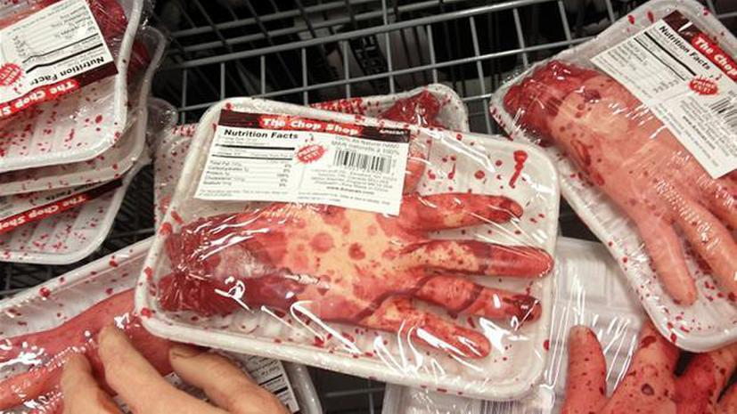

RUKI

It's also some nice dish...
This dish is rich in various vitamins as it contains human tendons... However, this dish will not be easy for you, because the main ingredient is hard work, but it's worth it...
Ingredients
- one more human (more the better)
- that's all :)
Steps
- cut hands off the cold body
- put the hands to the oven
- bake this shit for 1 hour at 100 degrees
- Your dish is ready to eat!